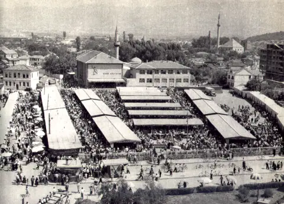
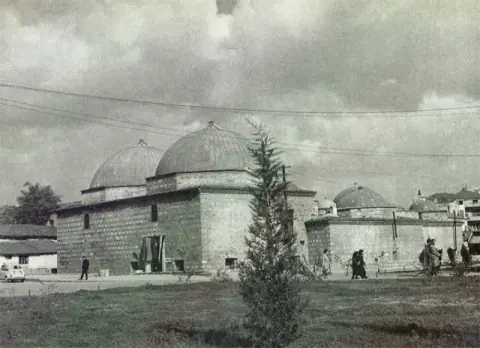
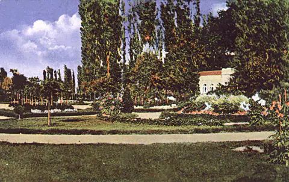
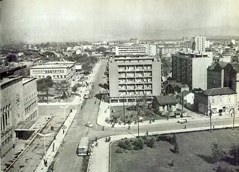

Παλιός χάρτης προσανατολισμού
38 αξιοθέατα στον παλιό χάρτη των Σκοπίων. Αγγίξτε ή κάντε κλικ σε ένα σημείο για να δείτε τη φωτογραφία.


Αραβικό σπίτι

Τσιμεντένια γέφυρα


Μπιτ Παζάρ

Το κεντρικό ταχυδρομείο

Δημοτικό νοσοκομείο

Αστική παραλία


Χαμάμ του Νταούτ Πασά

Ξύλινη γέφυρα

Σιδερένια γέφυρα

Σιδηροδρομικός σταθμός

Οίκος αναπήρων

Πέτρινη γέφυρα

Καθολική εκκλησία

Κουρσουμλί Χαν

Τζαμί του Μουσταφά Πασά

Εθνική Τράπεζα

Εθνική Βιβλιοθήκη

Λέσχη Αξιωματικών


Πάρκο

Πλατεία Μακεντόνιγια

Πλατεία Ελευθερίας


Ταχυδρομείο 2

Πύργος του Ρολογιού

Εκθεσιακός χώρος


Άγιος Δημήτριος

Σβέτι Σπας

Κοινοβούλιο

Μνημείο των πεσόντων αγωνιστών

Ο παλιός κεντρικός δρόμος

Φοιτητική εστία

Το φρούριο Καλέ

Θέατρο

Οδός Κότσο Ράτσιν

Οδός 11ης Οκτωβρίου

Φιλοσοφική Σχολή

Ξενοδοχείο Μακεντόνιγια
Πανόραμα